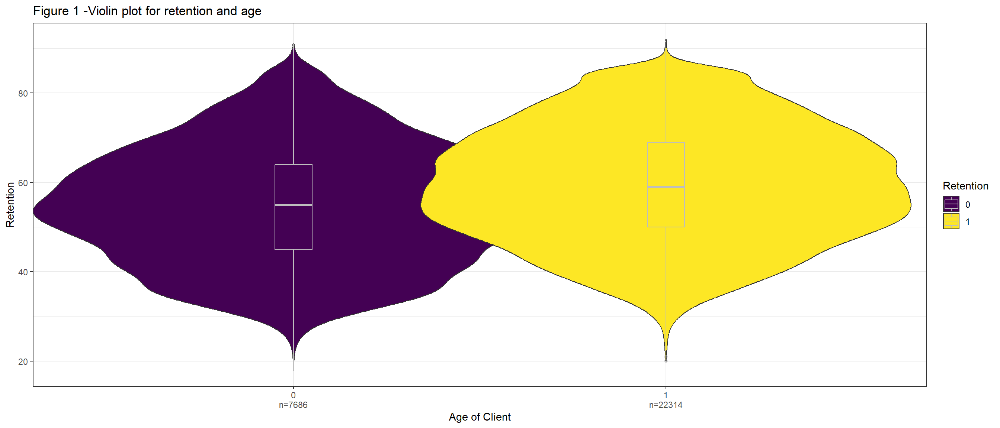
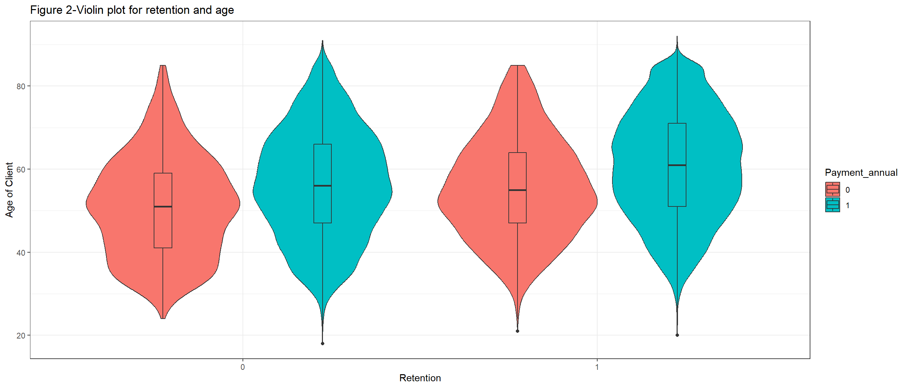
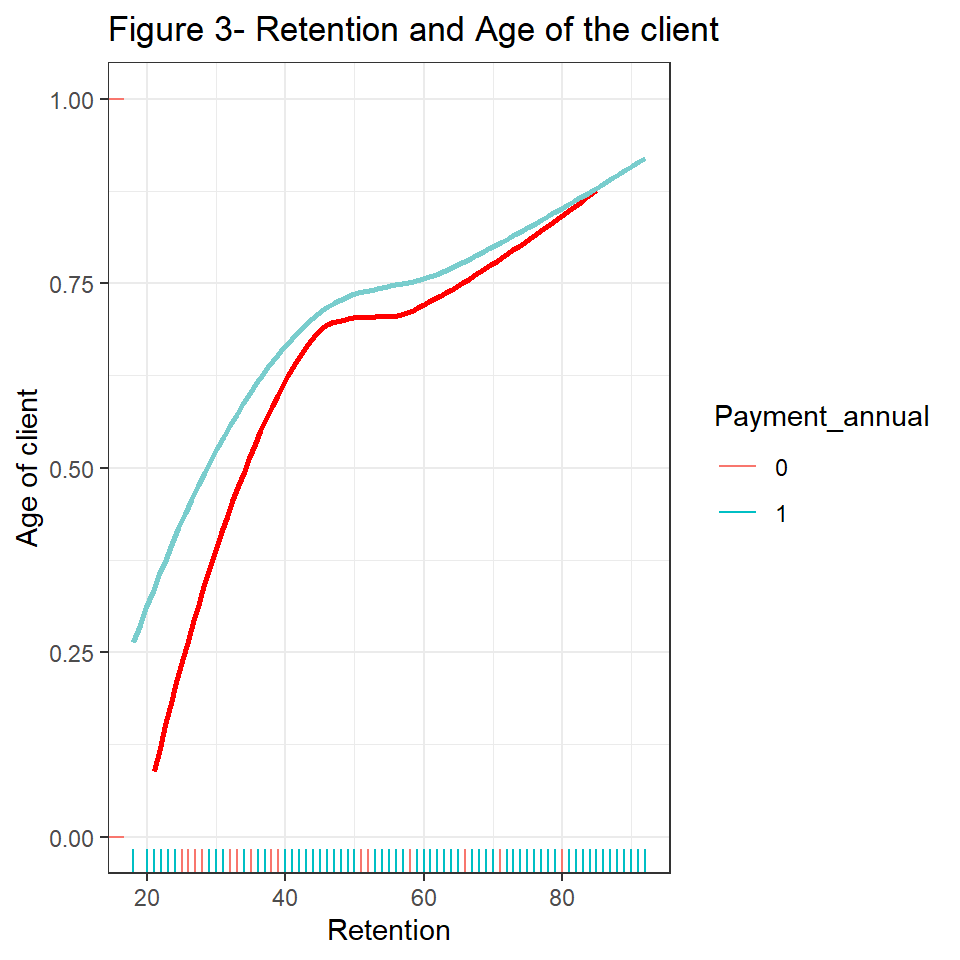
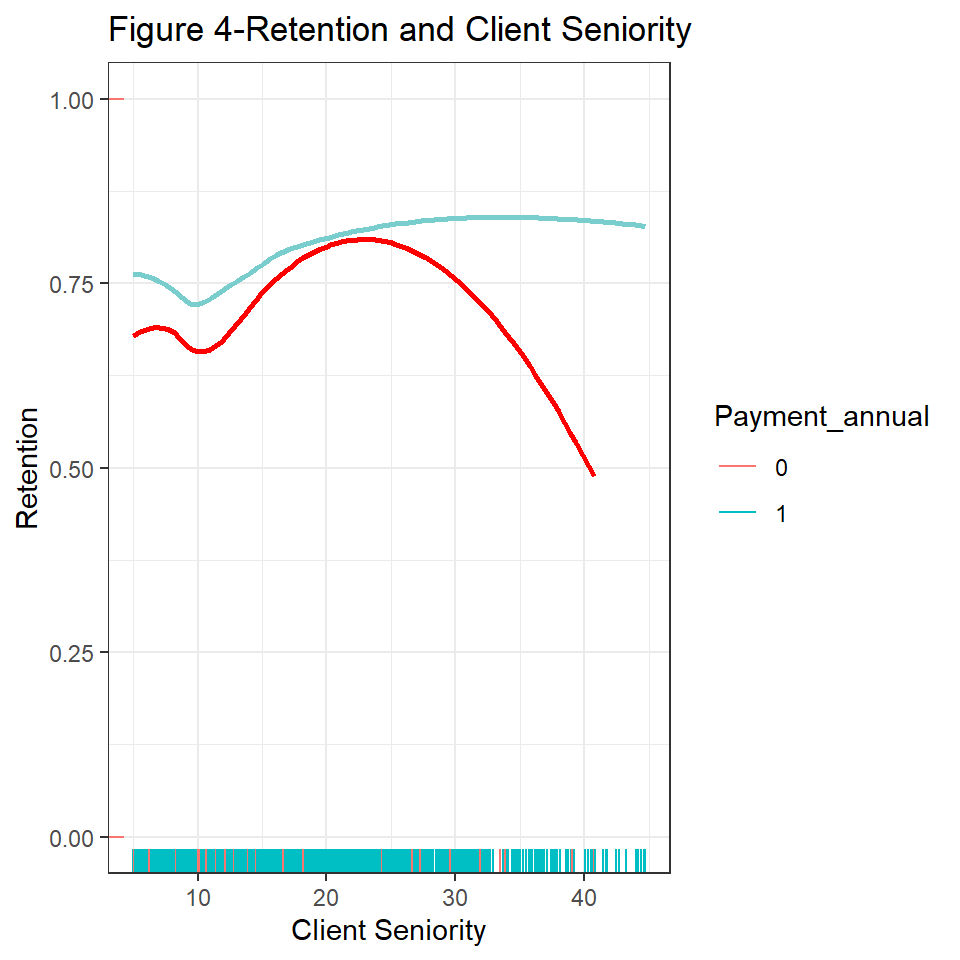
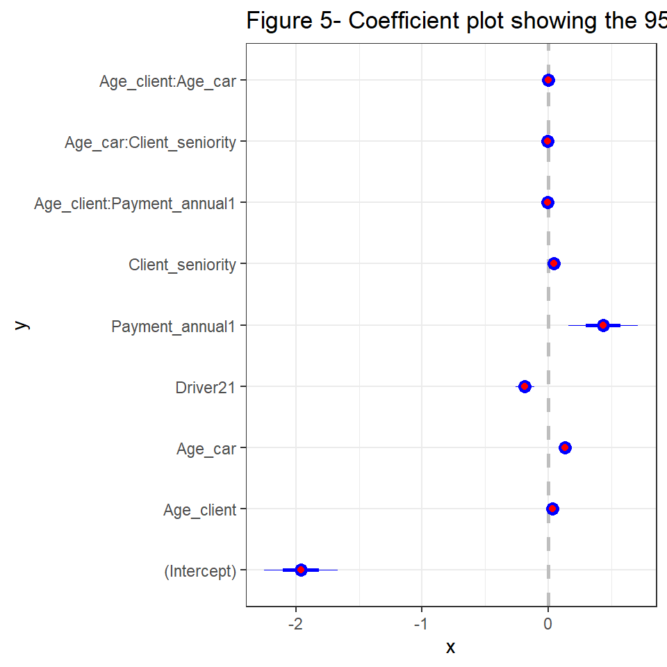

INTRODUCTION
Insurance is a form of a risk management contract, represented by a policy, in which the policyholder pays an insurance firm in exchange for financial security or reimbursement against uncertain losses or specific contingencies. Health, auto, life, and travel insurance are just a few of the various forms of insurance available. Auto insurance, specifically car insurance of the most prevalent types of personal insurance often required by law, that provides protection in the event that a person’s vehicle is damaged, stolen or involved in an accident. Premium, policy limit and deductibles are three crucial insurance policy elements that are frequently taken into account when picking the best insurance policy to suit an individual or an institution. For the long-term survival of an insurance company, it is important to focus on customer retention. Customer retention is a term that assesses customer loyalty, or an organization’s capacity to maintain its client over time. Many factors may influence an insurance company’s client retention rates. The research aims to understand the factors related to the retention of car insurance customers for an insurance company. We will build a model to help us understand the relationship between these factors and retention, access our model with another dataset to see how well we can predict the given response and also compare our prediction error with a null model that always predicts (Retention = 1) and results in a classification error of 0.26.
DATA OVERVIEW AND VISUALIZATION
The dataset for this project contains covariates or potential factors that could affect the retention of the car insurance policy. This section aims to create plots and graphs to help us understand the relationships that exist between the retention of the policy and the various factors that might influence this variable. The dataset contains 30,000 observations and the variables collected on the various customers can be explained with the descriptions below.
- Age_client: the age of the customer in years.
- Age_car: the number of years since the vehicle was bought by the customer.
- Driver2: 1 if the customer has informed the insurance company that a second occasional driver uses the vehicle, and 0 otherwise.
- Client_seniority is the number of years that the customer has been in the company.
- Retention equals 1 if the policy is renewed and 0 otherwise.
- Payment_annual 1 for annual payment and 0 for monthly payment.
To explore the dataset, we will first check the relationship between the age of the customer and the retention of the policy. From figure 1, we can see that 22,314 individuals renewed their policy and 7686 individuals did not renew their policy. Also, we observe that those who renewed their policies had an average age higher than those who did not renew their policies but on average most of the customers were in their late 50s and the spread between the groups is not so different. Figure 2 is looking at these same variables, but this is classified based on whether they have an annual payment or monthly payment. From this figure, it is interesting to see that there are some differences based on the payment method of the customer and their respective ages. People with annual payments tend to be older as compared to those who have monthly payments.

Since we have a binary response, we can also consider the retention of the policies in terms of the probability that the client will renew their policy. Figure 2 shows a smoothing estimate using the locally estimated scatter plots smoothing of how retention changes across the different age groups based on the payment method. We can see that the proportion of policies that were renewed among young customers was higher for those with annual payments as compared to those with monthly payments making the slope for the two payment methods different. We look at this same relationship but with the client’s seniority in place of the age in figure 2. From this figure, older customers or clients who have annual payments have a higher renewal rate as compared to those with monthly installments.


STATISTICAL PRECEDURES
For this section, we aim at building a model to help us understand and know which variables influence or affect the retention of the car insurance policy and also derive a strategy to help us make predictions with the finalized model to help answer the research question. The first thing we can look at to guide us with which statistical model will be most appropriate is the structure of the response variable. The response variable in question has binary outcomes and this changes a lot about how the statistical analysis should be carried out. Linear regression is an additive model and would not work for binary outcomes. Therefore we will need a model that has the features of transforming the bounds of our outputs to the range of 0 and 1. The logistic regression would be appropriate for this situation. The logistic regression will treat the resulting values as probabilities which will then help us map them into random binary outcomes. We will define our logistics regression model as;
\[y_i\sim Bernouli(p_i)\] \[Pr(y_i = 1) = p_i\] \[\text{logit}(p_i) = X_i\beta\]
where \(y_i\) is the response variable indicating whether or not a client will renew their policy, \(\text{logit}\) is the link function, and \(X_i\beta\) is our linear predictors under the assumption that the outcomes are independent given these probabilities. This next step is to discuss the variables to be included in our defined model. Looking at the provided dataset, we were given five possible factors that could influence the renewal rate of the car insurance policy. The first model we will consider will be a logistic regression model that contains all the provided independent variables as linear predictors. We will fit our models with the glm function from the stats package which is used to fit generalized linear models, specified by giving a symbolic description of the linear predictor. The generalized linear model is an extension of ordinary linear regression, where the linear model is related to the response variable via the link function.
For the second model, we will look at some interactions for some specific variables in addition to the model we defined as our first model. The reason why we consider interactions is that sometimes one independent variable depends on the outcome of another independent variable to explain the response. There could be situations where our response varies when an observation belongs to a specific group of another variable and influences its relationship with another explanatory variable. In this case, the slopes between these two groups under this relationship will differ making it very important to check for possible interactions and is best detected by visualizing your data with graphs. From Figure 3, we saw that there were some differences in the slope based on the payment method of the client hinting to us about possible interactions. Our proposed second model will consider an interaction between the age and the payment method, the client’s seniority and the age of the car as well as the age of the client and the age of the car. We will also consider another model with any possible interactions between all the variables in the model.
After fitting the three proposed logistic regression models, we can use AIC to assess the performance of the models and aid in the model selection. The Akaike information criterion (AIC) is defined as AIC = deviance + 2k, where k is the number of coefficients in the model. The best-fit model according to AIC is the one that explains the greatest amount of variation using the fewest possible independent variables and a lower AIC value indicates a better model.
Table 1 shows the AIC scores for the selected models and based on these values, we can say that for the given data, the best model according to the AIC is our logistic regression model which considers the interaction between the age and the payment method, the client’s seniority and the age of the car, and the age of the client and the age of the insured car. The final model is defined as;
\[ \operatorname{Pr}\left(\text { Retention }_i=1\right)=p_i \] \[ \operatorname{logit}\left(p_i\right)=\beta_0+\beta_1 * \text{ Age-client }_i+\beta_2 * \text{ Age-car }_i+\beta_3 * \text{ Driver1 }_i+\beta_4 * \text{ Payment-annual1 }_i+ \] \[ \beta_5 * \text{ Client-seniority }_i+\beta_6 * \text{ Age-client }_i * \text{ Payment-annual1 }_i+\beta_7 * \text{ Age-car }_i * \text { Client-seniority }_i+ \] \[ \beta_8 * \text { Age-client }_i * \text { Age-car }_i \]
RESULTS
Table 2 is a summary of the parameter estimates from our final model together with their standard errors which is a measure of uncertainty for the coefficient. The coefficients of our model are on a logit scale and we can change them to probabilities by transforming the linear predictors of the model using the inverse logit function to get the probability that they will renew their policy (Pr(Retention = 1)). The coefficients can also be viewed in terms of the odd ratio by exponentiating our coefficients. Therefore to interpret the coefficient for the age of the client, we can say that a difference of 1 in the age of the client corresponds to a positive difference of 0.034 on a logit scale of renewing their policy and this estimate will be within the interval of 0.028 and 0.04 approximately 95% of the time. The intercept is interpreted assuming zero values for all the other continuous predictors and the reference group for the binary categorical variables and from Table 2 we have an estimate of -1.961 and a 95% confidence interval of -2.251 and -1.671 on a logit scale. For the coefficient of Payment_annual1, we can say that a client who pays annually has an expected difference of 0.436 higher with a 95% confidence interval of 0.16 and 0.712 on a logit scale of renewing their policy as compared to those of are enrolled on the monthly payment scheme. The interaction term is looking at the difference in slope on a logit scale. The coefficients of our interaction terms are almost close to zero. Meaning when we find the inverse logit, they will be also close to 0.5 representing a 50-50 chance of the customers renewing their policy hence these coefficients does not influence the probability of renewal that much. The standard errors for these coefficients are also close to 0 on a logit scale.
Figure 5 shows a visual representation of estimates and their 95% confidence intervals for the coefficients of our selected model. The figure helps us to get a clear picture of which coefficients of the model have a higher, lower, or no impact on the retention of the car insurance policy for the insurance company on a logit scale.

The insurance also provided an additional dataset that can be used as test data to access the predictive ability of our model. We will adopt the strategy of using the covariates from this test model to predict the retention of the policies and since we know the true values, we can check how accurate our predictions are. We can use the classification error approach which tells us the number of misclassified outcomes by our model predictions out of the total number of responses to predict from the test data.
After we have made predictions with our model on the test data, table 3 is the classification table for our predicted vs true values, and this results in a classification error of 0.256. This means that about 26% of the time, our model predictions for the outcomes of the test data were misspecified.
DISCUSSION
Our research question was to know which factors influence the retention of the insurance policy and also build a model to help us make predictions given the provided covariates. A logistic regression model was considered to model our response since we have a binary outcome of whether the clients renewed their policy or not. The final selected model based on the Akaike information criterion was an interaction model that included all our covariates and an interaction between the age and the payment method, the client’s seniority and the age of the car as well as the age of the client and the age of the car. Our model also showed that the client seniority had the greatest impact on the policy renewal compared to the other coefficients like the age of the client on a logit scale. After making predictions with this model and the additional data provided by the car insurance company, the classification error for the prediction of retention was about 0.256. Also from the research question, we want to compare our prediction error with a null model that always predicts (Retention = 1) and results in a classification error of 0.26. Table 4 represents the structure of this null model.
Using the null model as a basis for comparison, from table 5 we can see that our final model resulted in a classification error similar to the null model. We can use a proportion test to check if we can say our model is different from this null model in terms of the classification error. The one categorical proportion test produced a 95% confidence interval that contained the null value classification error of 0.26. Therefore we cannot say that our final selected model predicts retention differently from a null model that only predicts that a policyholder will renew their policy. Our results can only be generalized to this data from the insurance company since we don’t have a dataset from a random sample of all car insurance policies.
REFERENCES
Gelman, Andrew, Jennifer Hill, and Aki Vehtari. Regression and other stories. Cambridge University Press, 2020.
glm: Fitting Generalized Linear Models https://www.rdocumentation.org/packages/stats/versions/3.6.2/topics/glm
Violin plot with included boxplot and sample size in ggplot2 Holtz https://r-graph-gallery.com/violin_and_boxplot_ggplot2.html
Interpreting results from logistic regression in R using Titanic dataset Koh https://medium.com/(conankoh/interpreting-results-from-logistic-regression-in-r-using-titanic-dataset-bb9f9a1f644c?)
Logistic regression + histogram with ggplot2 PaoloCrosettoPaoloCrosetto 58011 gold badge77 silver badges1616 bronze badges & ThierryThierry 17.9k55 gold badges4646 silver badges6565 bronze badges https://stackoverflow.com/questions/33521539/logistic-regression-histogram-with-ggplot2
change coefficient names in coefplot.glm() Ivo et al. https://stackoverflow.com/questions/59036723/change-coefficient-names-in-coefplot-glm